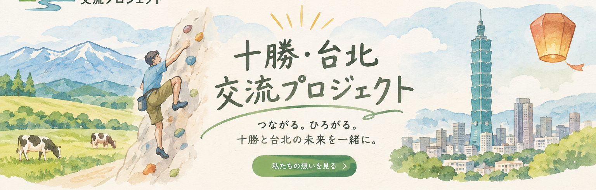

十勝の地域資源
自然、農業、食、観光、スポーツ、地域企業。十勝にある魅力や技術を、国内外へつなげます。

十勝と台北を結び、人・企業・地域資源が行き交う新しい交流のかたちをつくります。スポーツ、観光、食、農業、ビジネス、文化。民間の力で、継続的なつながりを育てます。
民間主導 ／ 分野横断 ／ 小さく始めて、持続的に育てる
十勝には自然・農業・食・観光・ものづくりなどの地域資源があります。台北には市場、人材、企業、文化のネットワークがあります。両地域の強みを結び、交流から新しい協業や地域の価値を生み出します。
自然、農業、食、観光、スポーツ、地域企業。十勝にある魅力や技術を、国内外へつなげます。
台湾の人々、企業、団体、消費者とつながり、十勝との相互交流や海外展開のきっかけをつくります。
人・商品・情報・サービス・ビジネスが双方向に行き来する、継続的な仕組みを目指します。
交流の場をつくるだけでなく、具体的な協力や事業につながる流れを育てます。
人・地域・企業を知る
文化・経験・情報を共有
一緒に企画し、実行する
地域の活力と事業へつなぐ
スポーツを入口に、十勝と台北のさまざまな分野をつなぎます。
ボルダリング、アウトドア、スポーツ団体の相互交流
台湾からの旅行者受入れ、地域体験、まち歩き
十勝食材、食イベント、飲食店や食品事業者の連携
農産物、産地訪問、農業体験、食品開発
企業マッチング、EC・SNS支援、台湾市場への展開
学生交流、語学、地域文化、学び合いの機会
まずは実行可能性とニーズを確かめながら、確かな実績を積み上げます。
十勝と台北のクライマーやスポーツ団体をつなぎ、相互訪問や交流イベントを企画します。
台湾の旅行者と十勝の地域資源をつなぎ、地域ならではの体験機会を紹介します。
十勝企業の商品やサービスを台湾へ届けるため、情報発信や販売の接点をつくります。
大きな組織を最初からつくるのではなく、コアメンバーと地域の協力者が案件ごとに連携します。
全体企画、事業戦略、営業、地域連携、WEB・SNS、運営管理を担当します。
現地の人材・団体・企業の開拓、集客、提携調整、連絡・運営を担当します。
施設、企業、農家、店舗、スポーツ団体などが、受入れやイベントを支えます。
通訳、ガイド、講師、イベントスタッフなど、必要な専門人材と連携します。
台北側の運営責任者は、初期段階では業務委託による試行を想定。活動実績と相性を確認したうえで、継続的な体制を検討します。
初期予算は30〜50万円を想定。ここでは40万円モデルを掲載しています。
金額は設立時の仮配分です。実際の渡航費・人件費・保険料等を確認して調整します。
単一の収入に依存せず、活動に応じた複数の収益源を育てます。
地域体験・交流プログラム
EC・SNS・ブランド支援
参加費・協賛
個人・法人会費
商品紹介・販売支援
※旅行商品の募集・企画・手配など、旅行業法上の登録が必要となる業務は、登録旅行会社との連携を含めて適切に対応します。旅行代金等の預り金は、団体のサービス売上と区分して管理します。
まずは協力先を見つけ、最初の交流と有料案件を形にします。
団体名・規約・WEB・SNSを整備。十勝側の協力候補を整理し、参加・協力の窓口をつくります。
台北側の運営責任者候補を選定。クライミングジム、企業、団体へ提携を打診します。
オンライン交流会や初回イベントを開催。参加者の反応と有料サービスの可能性を検証します。
各年の目標は、実績を見ながら段階的に見直します。
※上記は年間売上の経営目標であり、市場予測や売上保証ではありません。初年度の収支試算は、代表者報酬・税金・未計上原価等を差し引く前の仮計算です。
企業、スポーツ団体、学校、地域組織、個人の皆さまと、設立パートナー・協力者を募集していきます。
個人、企業、スポーツ団体、学校、学生、観光事業者、農業関係者、地域団体など、十勝と台北の交流に関心のある方を幅広く想定しています。
ボルダリングは初年度の重点事業の一つです。団体全体としては、スポーツに限らず観光、食、農業、ビジネス、文化・教育など幅広い交流を目指します。
会員制度や会費の詳細は、設立準備の中で検討します。イベント参加費や個別サービス料金が発生する場合は、内容と金額を事前にご案内します。
はい。台北を拠点に、現地の企業・団体・スポーツ施設・学校などとの連携や、運営を担うパートナーを探す構想です。
現在、設立準備段階の紹介サイト案です。正式公開時に、団体名・担当窓口・メールアドレス・SNS等を掲載します。
お問い合わせ窓口：準備中